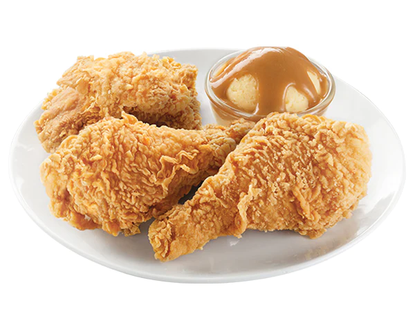

Fried Chicken Recipe List

Jollibee's fried chicken is arguably one of the more flavorful fast food
fried chickens in the country. KFC has fallen off as other competitors like Popeyes
have come onto the scene.
Most of these fast food chains do not have their recipe widely available but
there have been attempts from food creators and chefs alike to recreate the
delicious fried chicken.
- 2lbs of Chicken Drumsticks
- 2lbs of Chicken Thighs
- Buttermilk
- Paprika
- Cumin
- Curry Powder
- Salt and Pepper
- Panko Bread Crumbs
- Eggs and Flour
- High heat oil
- Large dutch oven
- Marinate the chicken in Buttermilk for 12-24 hours
- Crack a few eggs and mix
- In another bowl mix the dry ingredients together
- Cover then chicken in eggs
- Transfer into Flour and then recoat with eggs
- Cover chicken in dry mix
- Pour oil and dutch oven and bring up to temperature
- Put chicken into dutch oven for 15-20 minutes
- Take the chicken out and repeat for another 15-20 mins